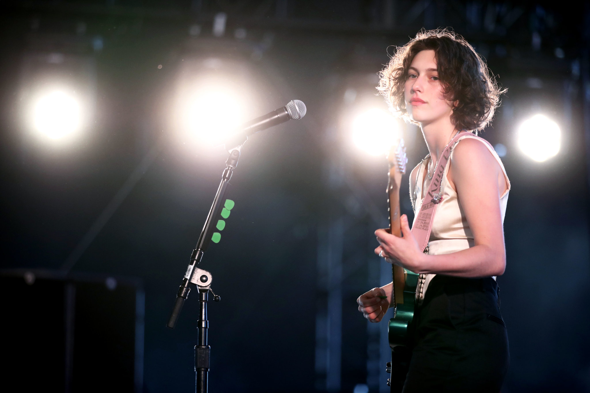

Metropolitan Opera: Encore performances from the "Live in HD" series post each night at 7:30 p.m. Eastern.
Chamber Music Society of Lincoln Center: Livestream with daily releases of archival videos.
Broadway World: Daily "living room concerts" from Broadway's best.
Seattle Symphony: Plans to stream special performances on its YouTube channel.
npr music: npr has created a live document for artists from around the world performing live online.
Calming Piano Music: Lots of classic piano songs. Great playlist for bubble bath.
nytimes: A once-a-week blast of pop music coverage created by nytimes.